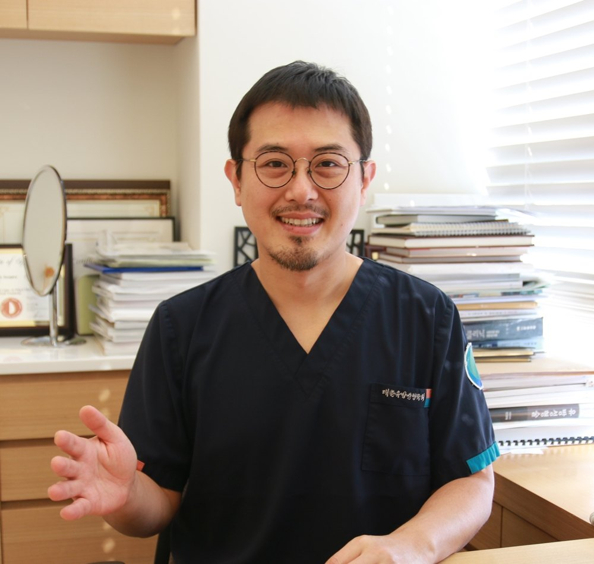
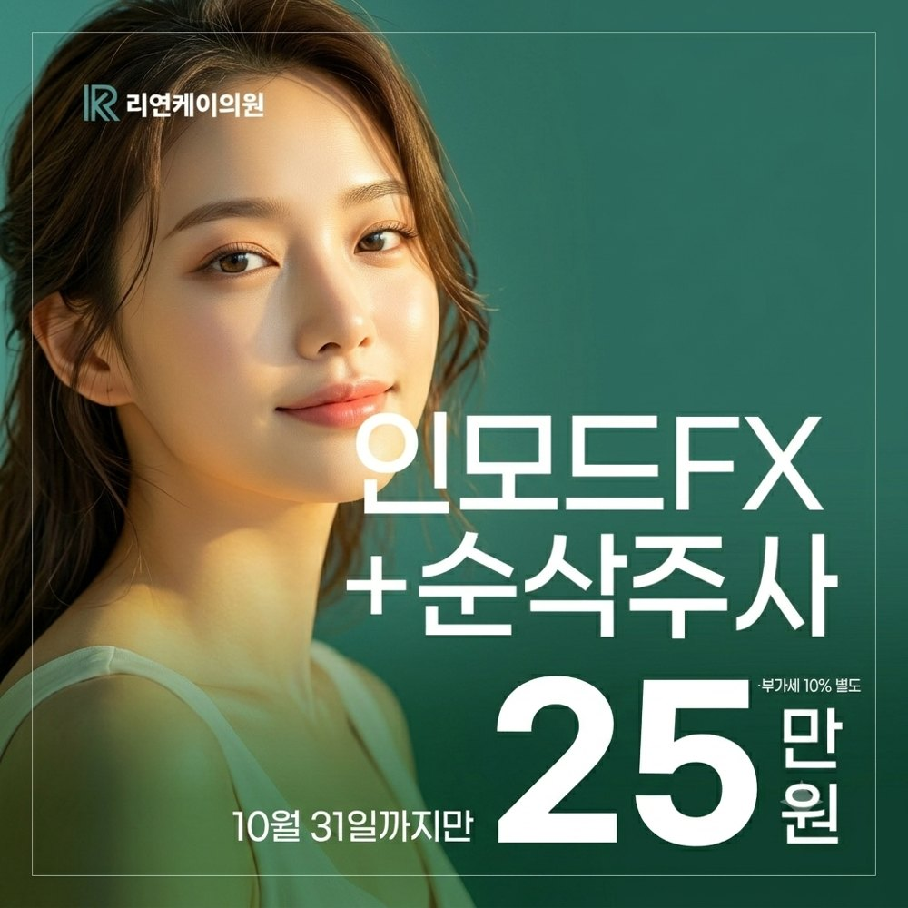
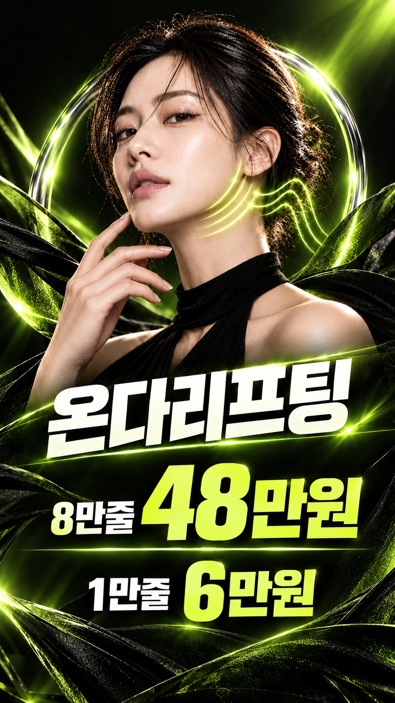

심술보처럼 보이는 불독살과 입꼬리 처진살, 그리고 심부볼 때문에 고민이신가요?
나이가 들면서 피부 탄력이 떨어져 볼 아래 지방층이 내려앉거나, 피하지방과 심부지방층의 볼륨이 두드러지면 불독살(Prejowl fat)이 도드라지게 됩니다. 젊은 층에서는 체중 증가나 비만으로 인한 지방 볼륨 증가가 주요 원인이 되기도 합니다.

불독살과 심부볼이 생기면 가장 크게 달라지는 것은 바로 '얼굴형'입니다.
매끄러운 달걀형 라인이 사각형이나 골격이 도드라지는 골격형(스켈레탈 셰이프)으로 바뀌면서, 얼굴이 전체적으로 커 보이고 고집스러운 인상을 주기 쉽습니다.
얼굴 라인을 정리하는 방법으로는 지방흡입, 지방분해주사, 장비 리프팅, 얼굴 림프 마사지 등 다양한 치료법이 있습니다.
울쎄라, 써마지, 온다(ONDA) 리프팅 등
과도한 피하지방을 줄여 주는 지방분해주사(순삭주사)
얼굴 지방흡입과 실리프팅 병행
비침습·소침습 시술은 회복 부담이 적어 많은 분들이 선호하시며 만족도도 높은 편입니다.
다만 처짐이 심하거나 더 뚜렷한 페이스라인 변화를 원하신다면, 얼굴 지방흡입과 실리프팅을 함께 하는 보다 적극적인 시술을 고려해야 합니다.
불독살을 지방흡입으로 제거하고 실로 당겨 주기만 하면 될 것 같지만, 하안면부 시술은 의료진의 숙련도와 해부학적 이해가 무엇보다 중요합니다.
과거에는 심부지방을 무조건 제거해 볼륨을 줄이려 했습니다. 그러나 해부학적 이해 없이 시술하면 오히려 볼 패임이 심해져 골격이 더 드러나는 부작용이 생길 수 있습니다.
실제로 심부볼 제거만으로 큰 효과를 보는 경우는 젊은 비만 환자 중 소수에 불과합니다. 대부분은 처진 피부와 함께 내려앉은 피하지방을 정교하게 제거하는 것이 훨씬 안전하고 효과적입니다.
사각턱 앞쪽의 가성막(Pseudomembrane) 부위를 과도하게 흡입하거나 캐뉼라 자극이 지나치면, 유착으로 인한 패임이 생길 수 있습니다.
그래서 리연케이의원에서는 베이저2(VASER2) 같은 초음파 장비를 활용합니다. 약 90% 이상의 지방 제거와 53% 수준의 리프팅 효과를 기대할 수 있으며, 가성막 앞쪽의 목표 피하지방만 선택적으로 녹여 흡입해 주변 조직 손상과 부작용 위험을 줄입니다.
지방 제거 없이 실리프팅만 하면, 처진 불독살의 지방 무게가 실이 당기는 반대 방향으로 작용합니다. 이를 견디려고 실을 과도하게 당기면 남는 조직이 광대 부근에 뭉쳐 오히려 광대가 부각되는 역효과가 날 수 있습니다.
심부볼·불독살 부위의 지방을 먼저 제거해 무게를 줄인 뒤, 실로 살짝 잡아 흡입 부위가 바르게 유착되도록 유도해야 합니다. 이렇게 해야 라인이 한결 자연스럽게 완성되고, 시간이 지나 다시 처지는 현상도 크게 줄일 수 있습니다.
얼굴 지방흡입과 실리프팅을 함께 받으면 붓기가 심해 일상생활에 지장이 크지 않을까 걱정하시는 분들이 많습니다.
실제로는 1주일 이내에 화장으로 충분히 가려질 정도의 미세한 멍과 붓기만 남는 경우가 많아, 주말이나 짧은 휴가를 활용해 시술받으셔도 티가 잘 나지 않는 편입니다.
비만이나 노화로 얼굴형이 사각형으로 변하는 것은 외모 스트레스의 큰 요인이 됩니다. 피부 두께, 지방량, 처짐 정도에 맞춰 비침습 레이저·주사 치료부터 침습적 리프팅까지 알맞은 맞춤 시술로 매끄럽고 갸름한 얼굴 라인을 완성해 보세요.


노화로 피부 탄력이 떨어져 볼 아래 지방층이 내려앉거나, 피하지방과 심부지방의 볼륨이 두드러지면 생깁니다. 젊은 층은 체중 증가로 인한 지방 증가가 주요 원인이 되기도 합니다.
심부볼 제거만으로 효과를 보는 경우는 젊은 비만 환자 중 소수입니다. 무작정 제거하면 볼 패임이 생길 수 있어, 대부분은 처진 피하지방을 정교하게 제거하는 편이 안전합니다.
지방 무게가 남아 있으면 실이 당기는 힘과 반대로 작용해, 과하게 당길 경우 광대 부근이 뭉쳐 보일 수 있습니다. 지방을 먼저 줄이고 실로 고정하는 순서가 중요합니다.
대개 1주일 이내에 화장으로 가려질 정도의 멍과 붓기만 남는 편입니다.
처짐 정도와 지방량에 맞는 순서가 자연스러운 턱선을 만듭니다.
불독살, 입꼬리 처진살, 심부볼 고민이라면 리연케이의원에서 1:1 상담으로 나에게 맞는 시술을 찾아보세요.